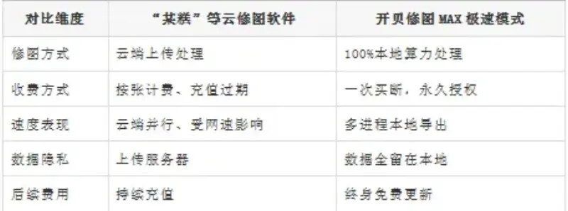
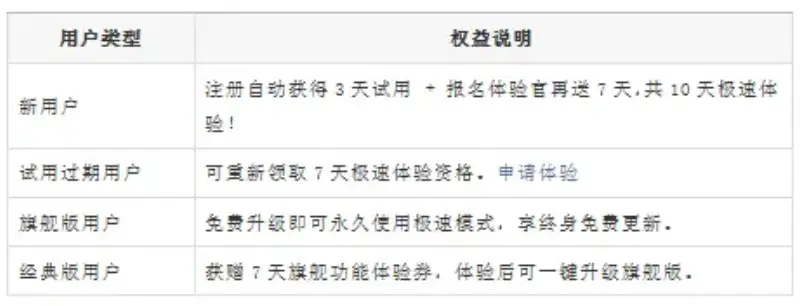
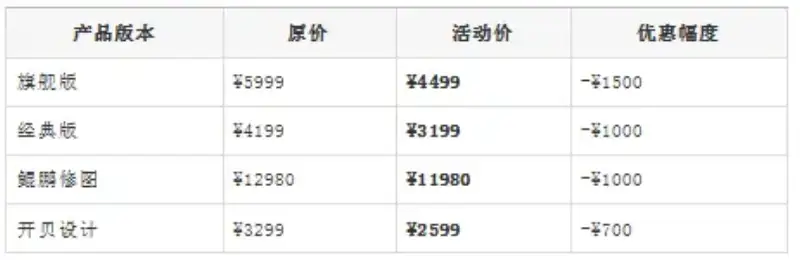
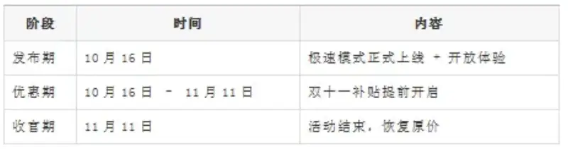

Double 11 subsidies start early, and the fast experience opens at the same time
1. Retouching enters a more efficient era
Over the past few years, Kaibei Retouching has worked with countless retouchers, photo studios, and photography workshops. From the classic PS-linked retouching to today's standalone fast mode, we kept asking one question.
What should the future of retouching look like?
Faster? More free? More cloud computing power? Or the user in control?
We believe the future of retouching should be this.
Fast, but not dependent on your network speed.
A good experience, but not tied to paid credits that expire.
New technology, but with the user in control of cost and data security.
So we insisted on making Kaibei Retouching MAX a
professional retouching tool that you buy once, use forever, and that runs fully on local computing power.
This is our biggest difference from cloud retouching platforms such as Pixel Cake. They rely on cloud billing and upload-based processing. Kaibei chose to return to local processing, so retouchers take back control of speed and freedom.
Today, the answer is here. The new Fast Mode of Kaibei Retouching MAX has officially launched. Retouching is as direct as color grading, faster, and freer.
2. Four highlights of the new Fast Mode
Instant preview. Slide a parameter and the image appears at once, for a quick preview.
Batch export. Multi-process work runs in the background, so you can keep retouching in the foreground.
Retouch presets. Save a parameter template and apply it to a batch with one click.
Fully standalone. It does not depend on PS, and it runs more smoothly.
Fast Mode does not only raise speed. It also makes the retouching experience light and free.
3. Why do more retouchers choose Kaibei?
The mainstream retouching platforms on the market, such as Pixel Cake, charge per photo and use credits that expire.
The more you shoot and retouch, the higher the cost, and the credits expire. Over the long term, this costs far more than buying the software outright.
Kaibei Retouching MAX sticks to an outright purchase plus local processing.
Buy once, use forever.
Unlimited photos, with no time limit.
Retouching runs fully on your computer, so your data is safer and the experience is smoother.

For photo studios, workshops, and professional retouchers,Kaibei is a long-term solution that costs less and gives you more freedom.
4. Benefits for new and existing users

The trial period for all trial and experience users starts automatically when the new version launches on October 16.
5. Double 11 subsidies start early
Thank you for your long-term support. This event opens the Double 11 national subsidy early.

6. Event schedule

Supply is limited. Buyers during the offer period automatically get a lifetime license and free upgrades.
7. Download and try it now
The new Kaibei Retouching MAX with Fast Mode is live now.
Follow the Kaibie Yingqing WeChat account for the download link.
8. In closing
Retouching is not only a contest of speed. It is a balance of experience, cost, and freedom.
Kaibei Retouching MAX Fast Mode lets you retouch fast, retouch steadily, and retouch freely.
Do not wait for Double 11. Buy now and get the lowest price of the year.
Event period: now until November 11, 2025
Support: follow the Kaibie Yingqing WeChat account and add the enterprise WeChat support for dedicated help.